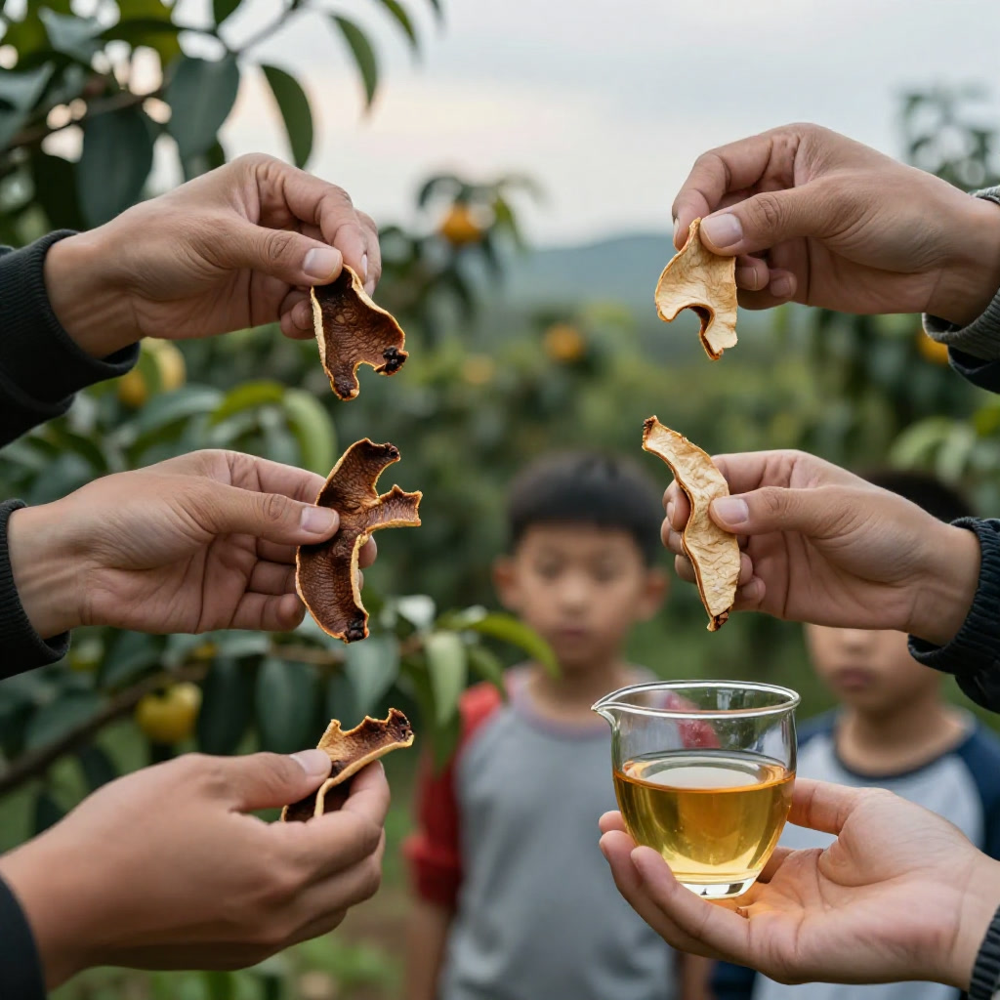
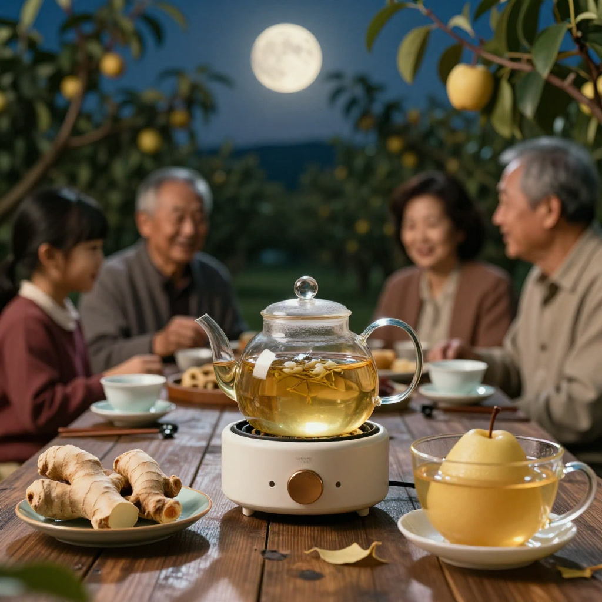

# 中秋陈香里的千年时光
**资料说明｜故事化叙事、非真实采访逐字稿**
本文以果园见闻为灵感作故事化重构，对话属叙事表达，唔系真实采访原话；年份、价格、行情描述为故事背景，唔构成投资或者收藏建议。
九月中旬的新会，天边挂着一轮将圆未圆的明月。银洲湖畔的茶枝柑园里，青黄相间的柑果压弯了枝头，空气中浮动着淡淡的柑香与泥土气息。滢滢姐站在果园边上，望着远处星星点点的灯火，心里明白——今年的中秋，又快到来了。
“每年这个时候，柑农们最忙也最开心。”滢滢姐轻轻摘下一颗半熟的柑果，指尖感受着果皮上细密的油胞，“你看这皮，还带着青绿，可再过个把月，这些果子就会变成金黄，然后一个个被小心地开皮、翻皮、晒皮，开始它们漫长的陈化之旅。”
她身旁的老友阿芳是本地柑农的第三代，笑着接过话头：“我阿爷常说，陈皮跟人一样，要经得住时间，才能熬出味道。新会这片地，西江、潭江和南海的咸淡水在这里交融，湿盆地气候养出来的茶枝柑，别的地方种不出这个味儿。”
千年一味，从药典到宫廷
陈皮的历史，说起来比许多人的族谱还要悠长。汉代《神农本草经》里，它还以“橘柚”之名入药；到了唐代《食疗本草》，“陈皮”二字才正式出现。宋代以后，医家们渐渐认可了新会这方水土出产的广陈皮道地性，明清时期更成为宫廷御用的珍贵药材。清代的乾隆年间，《广州府志》直截了当写道：“橘皮入药以广陈皮为贵，出新会者最良。”名医叶天士开方，更是明确要“新会皮”。
滢滢姐从口袋里掏出一小片二十年陈的老皮，对着月光端详。棕褐色的表皮泛着温润的光泽，密密麻麻的油胞像夜空里的星子。“这些小点点就是油室，正宗新会陈皮的油室饱满、分布均匀，年份越久，颜色从鲜红转为棕褐、棕黑，但始终有自然光泽，不会死黑死黑的。”
政企联动，百亿产业的守护
说到今年新会陈皮的产业动态，阿芳语气里多了几分振奋：“今年八月底，区里搞了个大动作，叫‘守标笃实·聚链共兴’产业协同发展交流会。政府、海关、银行、果农、商户全聚在一块儿，签了整整一千万斤柑果的采购协议，还搞了全链条溯源体系。以前最怕果子熟了没人收、价格被压低，今年等于吃了定心丸。”

滢滢姐点头补充：“海关技术中心跟陈皮村共建溯源体系，从种植、采收到加工、仓储、流通，全程可追溯。消费者扫个码，就能知道这片陈皮从哪块地长出来、哪年晒的、存了多久。这对咱们买陈皮的人来说，是实打实的保障。”
数据也很亮眼。2025年新会陈皮全产业链产值达到二百八十三亿元，种植面积十四万七千五百亩，经营主体超过七千八百家。新会陈皮连续三年稳居“中国区域农业产业品牌影响力指数榜”首位。一块皮，撬动了一整条产业链，也撬动了无数柑农的日子。
鉴别之道，四步认清好陈皮
“市面上假的、做旧的陈皮太多了，”滢滢姐叹了口气，“很多人花大价钱买的‘二十年陈皮’，说不定是去年才晒的新皮，拿染料一加湿一闷，外表看着黑乎乎的，内囊板结得像块铁。”
她伸出四根手指，给阿芳和围过来的几个年轻人讲起鉴别法门。
第一步：看产地与溯源。 正宗新会陈皮必须产自新会区划定的地理标志保护范围，尤以梅江、天马、茶坑、东甲等核心产区为佳。购买时首选能够提供清晰溯源信息的产品，一物一码，源头可查。
第二步：观外形与内囊。 外皮要有光泽，油室饱满、分布均匀，纹理清晰。年份越久颜色越深，但自然过渡，不会通体乌黑发亮。内囊方面，新皮雪白，随着年份增加自然脱落，变得松化，颜色转为古铜或棕褐色。做旧皮的内囊往往深黑且板结，毫无自然脱落感。
第三步：闻香气与尝滋味。 撕一小片闻一闻，正宗陈皮香气纯正馥郁，带有复合香——柑香、药香、陈香交织。年份越高，药香陈香越显著。煮泡后汤色金黄透亮，入口醇和、甘甜、润喉，回味悠长，甚至带有清凉感。劣质皮则口感单薄、酸涩，或有锁喉感。
第四步：验身份与报告。 靠谱的品牌会提供权威检测报告，确认橙皮苷、黄酮类等有效成分含量达标，安全指标合格。
“记住一句话，”滢滢姐总结道，“价格是品质的筛子。远低于市场价的‘十八年陈皮’，基本可以判定产地、年份或工艺有问题。”

养生妙用，秋燥时节的温润守护
中秋前后，天气渐渐转凉，秋燥袭人。这时候泡一壶陈皮水，最是应景。
从中医角度讲，陈皮性味辛、苦、温，入脾、肺二经，有行气健脾、降逆止呕、调中开胃、燥湿化痰之功。现代药理研究也证实，陈皮富含挥发油、橙皮苷、黄酮类等活性物质，陈化满十年的新会陈皮，黄酮类化合物含量较新皮提升二点八倍以上。
滢滢姐随手从包里掏出几个食疗方子，跟大家分享。
陈皮白茶饮：这是近几年最火的中秋搭配。优质陈皮性温，擅长健脾和胃、化解湿气；正宗高山白茶性凉清润，可清热降火、生津润喉。二者性味互补，寒热制衡，一壶煮下来，甘润醇厚，最是适合团圆饭后解腻消食。
陈皮姜茶：取陈皮五克、生姜三片，沸水浸泡十分钟。生姜性温，与陈皮相配，能驱散初秋微凉，暖胃止呕。体质偏寒的人尤为适合。
陈皮雪梨汤：陈皮五克、雪梨一个切片，加清水煮沸后小火炖二十分钟。梨能润肺止咳，陈皮化痰理气，合起来就是一道应对秋燥的温柔靓汤。
“不过要提醒一句，”滢滢姐认真道，“陈皮虽好，也不是人人适合。气虚、胃火重的人不宜多吃，正在服药的人也要注意间隔。养生这事，贵在适量、贵在坚持，不是越多越好。”
岁月陈香，一块皮的修行
月光渐渐升上中天，柑园里的虫鸣声此起彼伏。阿芳指着远处一排排晒皮架说：“那些都是今年头采的皮，刚晒了头一遍，还带着脾气，烈着呢。得等它们在仓库里慢慢待上三年、五年、十年，燥性褪了，药性圆润了，才算真正成‘皮’。”
滢滢姐望着那些晒皮架，语气轻柔：“陈皮这东西，急不来。三年成皮，十年成宝。它教会我们的，何尝不是一种耐心？现在人什么都讲快，唯独陈皮，你骗不了时间。”
她顿了顿，又说：“今年中秋，如果你要送礼，不妨考虑带一罐正宗新会陈皮。不奢华，却有心意。每一口陈香里，都藏着新会的风土、岁月的沉淀，还有制皮人几十年如一日的坚持。”
夜风吹过，银洲湖的水面泛起细碎的波光。远处村落的灯火一盏盏熄灭，而滢滢姐知道，那些静静躺在仓库里的陈皮，正和这片土地一起，默默度过又一个秋天。
中秋将至，愿你我的日子，也能如这陈皮一般——历经时光，愈发醇厚。
使用提示
本文只作一般资料整理，不构成食品安全、营养、收藏投资或者医疗建议。选购、保存或者食用陈皮，应向正规渠道及有关主管部门核实。如有身体不适或者正在接受治疗，请咨询合资格专业人士。唔好将陈皮当成治疗方案。
常见问题
Q1：中秋陈皮食疗人人适合吗？
不一定，孕妇、特殊体质、正在服药人士应先咨询专业人士。
Q2：如何鉴别新会陈皮？
查产地溯源，再综合观察外形内囊、香气汤色及检测资料，不要只看年份。
Q3：历史资料等于医疗建议吗？
不是，历史及文化资料不能替代医疗意见。
Q4：文章对话系真实采访吗？
唔系，对话及部分场景属故事化重构。
Q5：产业数据可否作投资依据？
不可以，数据只作资讯参考，不构成投资建议。
来源
本文为原创故事及公开资料整理，具体资料以官方最新公告为准。